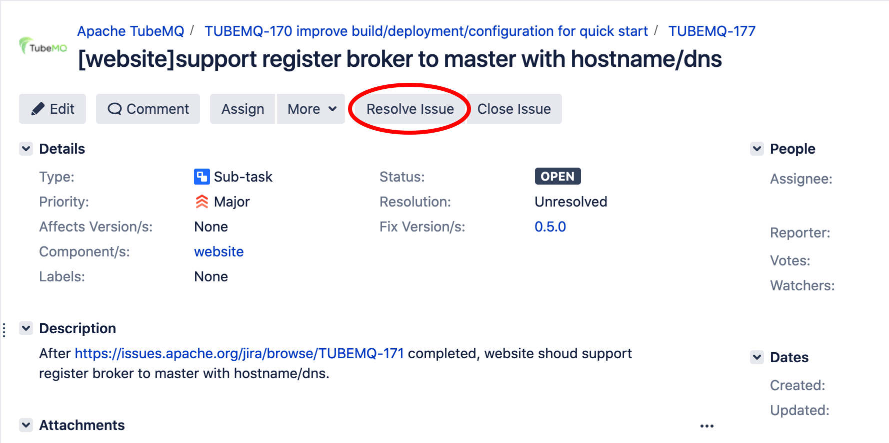

文档
文档
- 用户手册
JIRA使用指南
0. 前言
JIRA是Apache官方推荐的任务管理平台，被Apache下的大部分项目用于缺陷跟踪、需求收集、任务跟踪，其丰富的功能更加便于 项目的管理，基于此TubeMQ项目同样使用JIRA来进行管理项目。本文将简单介绍在TubeMQ的开发过程中如何使用JIRA。
1. 注册并登陆到JIRA
对于新用户而言，使用JIRA前需要注册一个个人账号。步骤如下：
- 登录注册页面
- 填入个人邮箱，姓名等注册信息后即可注册。
- 注册成功后登录并进入TubeMQ项目。
2. 查看issues
- 打开TubeMQ项目页面
- 可以看到TubeMQ项目的所有issue
- 点击右上角
View all issues and filters即可进行过滤issue，默认过滤规则包括任务类型、任务状态、负责人及输入关键字等搜索， 也点击右侧的More按钮，进行更多字段的过滤筛选。
3. 创建issues
点击Create可以新建一个issue，如下图所示：

- 必填项
- Project: Apache TubeMQ
- Issue Type: 选择issue类型，包含：Task, Bug, Feature, Improvement等
- Summary: issue标题，一句话描述该issue所要表达的问题
- Reporter: issue的提交者，即本人
- 选填项：
- Description：详细描述该issue所要表达的问题
- Priority: 该issue的紧急程度，包含：Major、Minor、Critical、High等
- Component/s: 该issue所属模块，包含：Portal、Master、Broker、Client、Server、website等
- 修改文档等官网信息，请选择website
- Fix Version/s：该issue影响的版本
- Assignee：该issue的处理人
创建好issue后可以将issue指定给自己或者其他人或者为空。如果指定给自己，此时你就可以准备开发代码解决该问题了。
如果你是第一次提交issue，可能该issue无法Assign给自己，此时你可以发邮件至：dev@tubemq.apache.org或联系TubeMQ的PPMC申请加入TubeMQ的contributor列表，加入后即可Assign其他issue给自己
4. 关闭issues
当该issue被解决后，可以关闭该issue，一般由TubeMQ的PPMC和Committer来关闭issue。
4.1. 点击Resolve Issue按钮
一般不要点击Close Issue，如下图所示：

4.2. 填写Resolution状态、修复版本等信息
常用的Resolution状态包含如下：
Fix: 该issue正常被修复Won't Fix: 该issue不需要被修复Duplicate: 该issue与其他issue重复Not A Problem: 该issue不是我一个问题Implemented: 该issue已经被实现 Resolve Issue界面如下：

JIRA更多使用方法请参考官方文档。